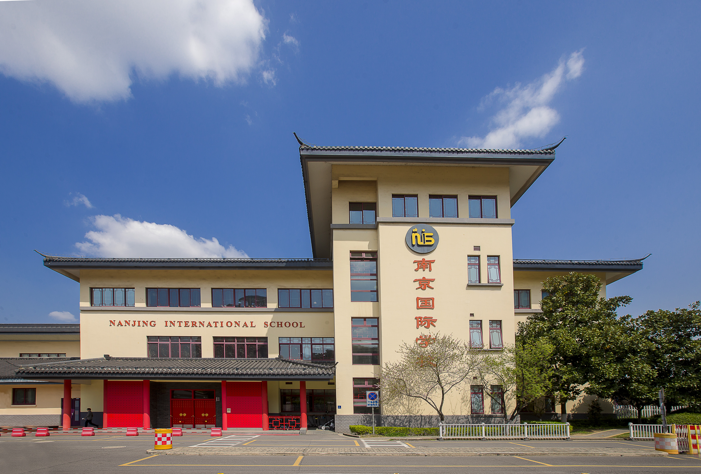

Gaemung first came to Nanjing, China when after he finished grade 4 of elementary school in Korea because of his father's work.
He got to attend Nanjing International School (NIS).

The concept of semester in NIS and Korean school was quite different. So, he had to attend the second semester of grade 4 again in NIS.